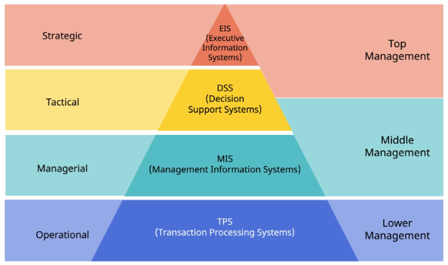
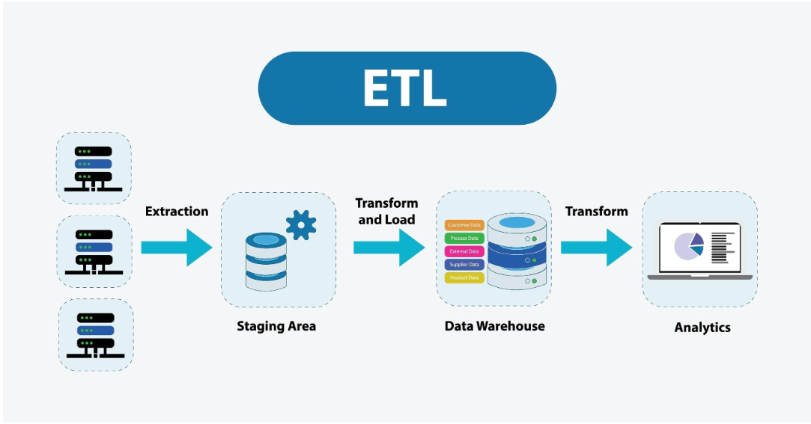
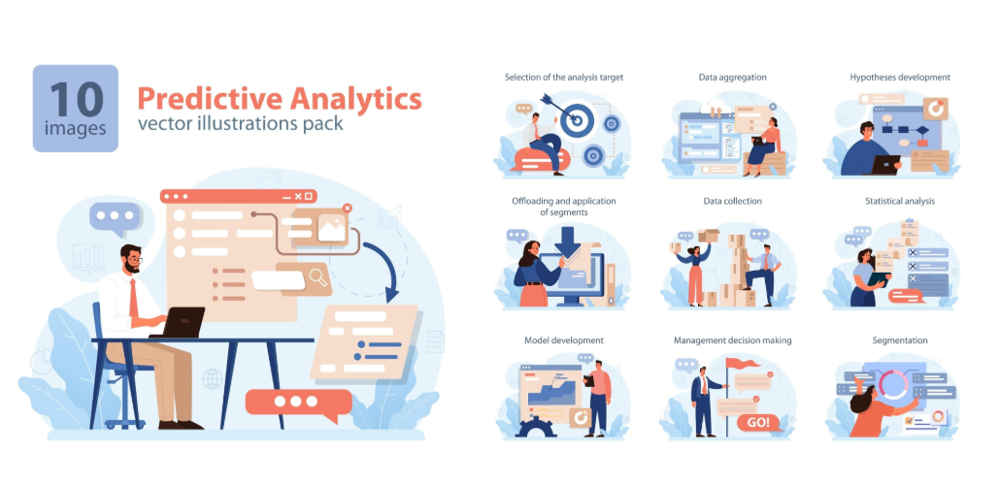

| អារម្ភកថា៖ ការវិវឌ្ឍនៃទិន្នន័យក្នុងបរិបទ ICT | ១ |
| ជំពូកទី ១៖ ការបែងចែក និងការធ្វើសមាហរណកម្មប្រព័ន្ធរបាយការណ៍ | ២ |
| ១.១ ប្រព័ន្ធព័ត៌មានគ្រប់គ្រងប្រតិបត្តិការ (MIS) | ២ |
| ១.២ ប្រព័ន្ធគាំទ្រការសម្រេចចិត្តវិភាគ (DSS) | ៣ |
| ១.៣ ប្រព័ន្ធព័ត៌មានថ្នាក់ដឹកនាំកំពូល (ESS/EIS) | ៣ |
| ១.៤ ទស្សនាទានទំនើប៖ ការរលាយចូលគ្នានៃរចនាសម្ព័ន្ធ (Modern Convergence) | ៣ |
| ជំពូកទី ២៖ ស្ថាបត្យកម្មទិន្នន័យកម្រិតខ្ពស់ និងដំណើរការ ETL | ៥ |
| ២.១ ការផ្លាស់ប្តូរពី Database ធម្មតាទៅកាន់ Data Warehouse | ៥ |
| ២.២ យន្តការសរសៃឈាមទិន្នន័យ (ETL Pipeline) យ៉ាងលម្អិត | ៥ |
| ២.៣ ការកើនឡើងនៃ Cloud Data Warehouse | ៦ |
| ជំពូកទី ៣៖ ការរចនា និងបង្ហាញទិន្នន័យតាមរយៈ BI Visualizations | ៨ |
| ៣.១ គោលការណ៍រចនាផ្ទាំងគ្រប់គ្រង (Dashboard Design Principles) | ៨ |
| ៣.២ ការជ្រើសរើស KPIs ឱ្យចំគោលដៅអាជីវកម្ម | ៨ |
| ៣.៣ គំនូសតាង និងការវិភាគនិន្នាការ (Trend Analysis) | ៩ |
| ៣.៤ គំរូសេវាខ្លួនឯង (Self-Service BI) | ៩ |
| ជំពូកទី ៤៖ ការវិភាគព្យាករណ៍ និងការអនុវត្តជាក់ស្តែង (Predictive Analytics) | ១០ |
| ៤.១ Churn Prediction៖ ការសង្គ្រោះអតិថិជនតាមរយៈ Machine Learning | ១០ |
| ៤.២ Demand Forecasting៖ ការបង្កើនប្រសិទ្ធភាពខ្សែសង្វាក់ផ្គត់ផ្គង់ | ១១ |
| ៤.៣ Fraud Detection៖ ការពារហិរញ្ញវត្ថុក្នុងពេលជាក់ស្តែង | ១១ |
| សទ្ទានុក្រមបច្ចេកទេស (Glossary of Terms) | ១២ |
| ឯកសារយោង (References) | ១៣ |
នៅក្នុងយុគសម័យសេដ្ឋកិច្ចឌីជីថល ទិន្នន័យ (Data) ត្រូវបានគេប្រៀបប្រដូចទៅនឹង "ប្រេងកាតថ្មី"។ សម្រាប់អ្នកសិក្សាជំនាញបច្ចេកវិទ្យាព័ត៌មាន និងសារគមនាគមន៍ (ICT) ការចេះត្រឹមតែសរសេរកូដ (Coding) និងការបង្កើតកម្មវិធី គឺមិនគ្រប់គ្រាន់ទៀតទេក្នុងការដោះស្រាយបញ្ហាអាជីវកម្មធំៗ។ មុខវិជ្ជា ប្រព័ន្ធព័ត៌មានវិទ្យាគ្រប់គ្រង (MIS - Management Information Systems) ដើរតួជាស្ពានចម្លងរវាង "បច្ចេកវិទ្យា" និង "យុទ្ធសាស្ត្រអាជីវកម្ម"។
សៀវភៅណែនាំកម្រិតខ្ពស់នេះ ត្រូវបានកែសម្រួលយ៉ាងយកចិត្តទុកដាក់ ដើម្បីផ្តល់នូវចំណេះដឹងទ្រឹស្តីដ៏រឹងមាំ (កម្រិត ៩៩.៩៩% នៃស្តង់ដាសាកលវិទ្យាល័យអន្តរជាតិ) អមដោយការអនុវត្តជាក់ស្តែងក្នុងឧស្សាហកម្មទំនើប។ តាមរយៈសៀវភៅនេះ អ្នកនឹងយល់ពីរបៀបប្រែក្លាយទិន្នន័យឆៅនៅក្នុង Database ឱ្យទៅជាព័ត៌មាន និងបញ្ញា (Intelligence) ដែលអាចជួយថ្នាក់ដឹកនាំធ្វើការសម្រេចចិត្តបានត្រឹមត្រូវ និងទាន់ពេលវេលា។
នៅក្នុងស្ថាប័នមួយ តម្រូវការនៃព័ត៌មានគឺខុសគ្នាទាំងស្រុងពីកម្រិតមួយទៅកម្រិតមួយ។ យោងតាមទ្រឹស្តីរបស់ (Laudon & Laudon, 2020) ប្រព័ន្ធព័ត៌មានត្រូវបានរចនាឡើងជាទម្រង់សាជីជ្រុង ដើម្បីបម្រើដល់ការសម្រេចចិត្ត៣កម្រិត។

MIS ឬ Operational Reporting គឺជាគ្រឹះនៃប្រព័ន្ធព័ត៌មាន។ វាទាញយកទិន្នន័យចេញពីប្រព័ន្ធប្រតិបត្តិការ (OLTP - Online Transaction Processing) ដូចជាប្រព័ន្ធលក់ (POS) ឬប្រព័ន្ធគណនេយ្យ មកធ្វើជារបាយការណ៍ដែលមានទម្រង់ច្បាស់លាស់ (Structured) (Turban et al., 2011)។
គោលដៅ និងការអនុវត្ត៖
DSS គឺជាប្រព័ន្ធដែលបំពាក់នូវសមត្ថភាពវិភាគខ្ពស់។ វាមិនត្រឹមតែឆ្លើយសំណួរថា "តើមានអ្វីកើតឡើង?" ប៉ុណ្ណោះទេ តែវាជួយឆ្លើយសំណួរថា "ចុះយ៉ាងណាប្រសិនបើ?" (What-if analysis) និងប្រើប្រាស់គំរូគណិតវិទ្យា (Mathematical modeling) ដើម្បីដោះស្រាយបញ្ហាពាក់កណ្តាលរចនាសម្ព័ន្ធ (Sharda et al., 2018)។
គោលដៅ និងការអនុវត្ត៖
ESS ត្រូវបានរចនាឡើងយ៉ាងពិសេសសម្រាប់នាយកប្រតិបត្តិ (C-Level Executives) ដោយច្របាច់បញ្ចូលទិន្នន័យផ្ទៃក្នុងក្រុមហ៊ុន និងទិន្នន័យខាងក្រៅ (ដូចជា និន្នាការទីផ្សារ គូប្រកួតប្រជែង ច្បាប់រដ្ឋបាល)។ ព័ត៌មានត្រូវបានសង្ខេបយ៉ាងខ្លី និងបង្ហាញជា Dashboard កម្រិតខ្ពស់ (Laudon & Laudon, 2020)។
ថ្នាក់ដឹកនាំកំពូលមិនត្រូវការដឹងពីចំនួនលក់របស់បុគ្គលិកម្នាក់ៗទេ ប៉ុន្តែពួកគេត្រូវការដឹងពី "ចំណែកទីផ្សារ (Market Share)" រួមរបស់ក្រុមហ៊ុន ដើម្បីសម្រេចចិត្តថាតើគួរទិញយកក្រុមហ៊ុនគូប្រកួតប្រជែង (Mergers & Acquisitions) ដែរឬទេ។
ទោះបីជាទ្រឹស្តីបែងចែកប្រព័ន្ធទាំង៣នេះដាច់ពីគ្នាក៏ដោយ នៅក្នុងការអនុវត្តជាក់ស្តែងនាពេលបច្ចុប្បន្ន ព្រំដែននេះបាន "រលាយចូលគ្នា (Blurred Lines)" តាមរយៈកម្មវិធី BI ទំនើបៗ (ដូចជា Microsoft Power BI, Tableau ឬ Looker)។ ស្ថាប័នលែងទិញប្រព័ន្ធ៣ផ្សេងគ្នាទៀតហើយ។ ពួកគេប្រើប្រាស់ "ថ្នាលតែមួយ (Single Platform)" ដែលផ្តល់សិទ្ធិ (Role-based Access) ផ្សេងៗគ្នា៖ បុគ្គលិកទូទៅមើលរបាយការណ៍ MIS, អ្នកវិភាគប្រើវាសម្រាប់ DSS, និងនាយកប្រតិបត្តិបើកមើលតែ Dashboard (ESS) នៅក្នុងកម្មវិធីតែមួយ។
សម្រាប់និស្សិត ICT វាជារឿងសំខាន់ដែលត្រូវបែងចែកឱ្យដាច់រវាង Database ប្រតិបត្តិការ (OLTP) និង Data Warehouse (OLAP) (Inmon, 2005)។ ប្រសិនបើយើងប្រើប្រព័ន្ធ BI ទៅទាញទិន្នន័យផ្ទាល់ពី Database ដែលកំពុងដំណើរការ (ឧ. MySQL របស់ប្រព័ន្ធ POS) វានឹងធ្វើឱ្យប្រព័ន្ធគាំង ឬដើរយឺតនៅពេលមានការវិភាគទិន្នន័យរាប់លានជួរ។
ហេតុនេះហើយទើប Data Warehouse ត្រូវបានបង្កើតឡើង។ វាជាឃ្លាំងទិន្នន័យកណ្តាល ដែលត្រូវបានរៀបចំរចនាសម្ព័ន្ធជា Star Schema ឬ Snowflake Schema (Kimball & Ross, 2013) ដើម្បីផ្តល់ល្បឿនអតិបរមាក្នុងការអាននិងទាញយកទិន្នន័យ (Read-optimized)។
ETL (Extract, Transform, Load) គឺជាការងារស្នូលរបស់វិស្វករទិន្នន័យ (Data Engineers)។

| លក្ខណៈប្រៀបធៀប | OLTP (Database ប្រតិបត្តិការ) | OLAP (Data Warehouse) |
|---|---|---|
| មុខងារចម្បង | កត់ត្រាប្រតិបត្តិការប្រចាំថ្ងៃ | ការវិភាគទិន្នន័យ និងរាយការណ៍ |
| ល្បឿនប្រតិបត្តិការ | អាន/សរសេរ រហ័សខ្លាំង (Fast Write) | ទាញយកទិន្នន័យធំៗរហ័ស (Fast Read) |
| ទំហំទិន្នន័យ | Megabytes ទៅ Gigabytes | Terabytes ទៅ Petabytes |
បច្ចុប្បន្ន ការបង្កើត Data Warehouse ដោយទិញ Server ដាក់ក្នុងក្រុមហ៊ុន (On-premise) កំពុងហួសសម័យ ដោយសារចំណាយខ្ពស់។ ស្ថាប័នទំនើបងាកទៅប្រើ Cloud Data Warehouses ដូចជា Amazon Redshift, Google BigQuery, ឬ Snowflake ដែលផ្តល់ភាពបត់បែនអាចពង្រីកទំហំបានភ្លាមៗ (Scalability) និងបង់ប្រាក់តាមទំហំប្រើប្រាស់ជាក់ស្តែង (Pay-as-you-go)។
ផ្ទាំងគ្រប់គ្រង (Dashboard) ដ៏ល្អមួយមិនមែនជារបស់ដែលមានក្រាហ្វិកពណ៌ឆើតឆាយច្រើននោះទេ ប៉ុន្តែវាជារបស់ដែលផ្តល់ព័ត៌មានលឿនបំផុត។ លោក Stephen Few (2013) បានបញ្ជាក់ថា Dashboard ត្រូវតែសមនឹងអេក្រង់មួយ ដោយមិនចាំបាច់រំកិលចុះក្រោម (Scroll) ឡើយ។ រាល់ក្រាហ្វិកដែលមិនបានបម្រើដល់ការសម្រេចចិត្ត ត្រូវតែលុបចោល ដើម្បីជៀសវាងការរំខានភ្នែក (Cognitive load)។
KPI (Key Performance Indicator) មិនមែនជាគ្រាន់តែជាតួលេខនោះទេ។ វាត្រូវតែអាចអនុវត្តបាន (Actionable)។ ឧទាហរណ៍៖ "ចំនួនអ្នកចូលមើលគេហទំព័ររាប់ម៉ឺននាក់" គឺជារង្វាស់បោកបញ្ឆោត (Vanity Metric) ប្រសិនបើវាមិនអាចប្តូរទៅជាការលក់។ KPI ពិតប្រាកដគឺ "អត្រានៃការបំប្លែងទៅជាអ្នកទិញ (Conversion Rate)"។ នៅក្នុង Dashboard, KPI តែងតែត្រូវបានប្រៀបធៀបជាមួយគោលដៅ (Target) ឬទិន្នន័យខែមុន ដើម្បីបង្ហាញពីភាពរីកចម្រើន (Progress)។
ការមើលឃើញទិន្នន័យ (Data Visualization) ប្រើប្រាស់ក្រាហ្វិកផ្សេងៗទៅតាមបរិបទ៖
ក្នុងបរិបទទំនើប ក្រុមហ៊ុនអនុវត្តនូវ Self-Service BI។ មានន័យថា ផ្នែក IT រៀបចំតែ Data Warehouse និងទិន្នន័យឱ្យមានស្តង់ដារ ចំណែកឯអ្នកប្រើប្រាស់នៅតាមផ្នែក (ដូចជាផ្នែកទីផ្សារ ហិរញ្ញវត្ថុ) អាចទាញយកទិន្នន័យ (Drag and drop) និងបង្កើត Dashboard ដោយខ្លួនឯង ដោយមិនចាំបាច់ចេះសរសេរកូដ ឬពឹងផ្នែក IT គ្រប់រឿងដូចមុនទៀតទេ។
Predictive Analytics គឺជាការវិវឌ្ឍពី BI កម្រិតមូលដ្ឋាន ឈានចូលទៅកាន់វិស័យ Data Science និង Machine Learning (Provost & Fawcett, 2013)។ វាមិនត្រឹមតែប្រាប់ពីអ្វីដែលបានកើតឡើងទេ តែវាទស្សន៍ទាយពីអនាគតដោយផ្អែកលើលំនាំទិន្នន័យចាស់។

ការបាត់បង់អតិថិជន (Churn) គឺជាបញ្ហាដ៏ធំរបស់ស្ថាប័នផ្តល់សេវាកម្ម (ដូចជា ធនាគារ ក្រុមហ៊ុនទូរគមនាគមន៍ ឬសេវា Subscription ដូចជា Netflix)។ តាមរយៈក្បួនដោះស្រាយ (Algorithms) ដូចជា Logistic Regression ឬ Random Forest ប្រព័ន្ធអាចបង្កើតពិន្ទុហានិភ័យ (Risk Score) សម្រាប់អតិថិជនម្នាក់ៗ។
ប្រសិនបើប្រព័ន្ធចាប់បានថា អតិថិជន ក មានអត្រាឈប់ប្រើប្រាស់សេវា ៨៥% (ដោយសារគាត់កាត់បន្ថយការតេចេញ និងមានប្រវត្តិទូរស័ព្ទទៅផ្នែកត្អូញត្អែរញឹកញាប់) ប្រព័ន្ធនឹងលោត Alert (សារព្រមាន) ទៅកាន់ប្រព័ន្ធ CRM។ ក្រុមការងារទីផ្សារអាចខលទៅសួរនាំ ឬជូន Promotion ពិសេសដើម្បីរក្សាគាត់កុំឱ្យទៅកាន់ក្រុមហ៊ុនគូប្រជែង។
ការព្យាករណ៍តម្រូវការទីផ្សារ គឺជាការប្រើប្រាស់បច្ចេកទេសវិភាគទិន្នន័យតាមបន្តបន្ទាប់ពេលវេលា (Time Series Analysis) (Hyndman & Athanasopoulos, 2018)។ ផ្សារទំនើប ឬក្រុមហ៊ុនផលិត ទាញយកប្រវត្តិលក់ច្រើនឆ្នាំ រួមបញ្ជូលជាមួយរដូវកាល ថ្ងៃបុណ្យជាតិ និងឥទ្ធិពលអាកាសធាតុ។ លទ្ធផលនៃការទស្សន៍ទាយនេះ ជួយប្រាប់ប្រធានផ្នែកស្តុកទំនិញថា "ខែក្រោយយើងគួរកម្ម៉ង់ទំនិញប្រភេទ A ប៉ុន្មានកេស"។ ការធ្វើបែបនេះ កាត់បន្ថយការកកស្ទះទំនិញក្នុងឃ្លាំង (Overstocking) និងបញ្ហាដាច់ស្តុក (Stockouts)។
នៅក្នុងវិស័យហិរញ្ញវត្ថុ ការទប់ស្កាត់ការក្លែងបន្លំទាមទារនូវការឆ្លើយតបលឿនបំផុត។ Predictive Models ប្រើប្រាស់បច្ចេកទេសរកមើលភាពខុសប្រក្រតី (Anomaly Detection) (Provost & Fawcett, 2013)។ ពេលដែលកាតឥណទានមួយត្រូវបានអូស (Swipe) ទិន្នន័យប្រតិបត្តិការនឹងត្រូវផ្ញើទៅកាន់ AI Model ក្នុងរយៈពេលរាប់មិល្លីវិនាទី (Milliseconds)។
ប្រសិនបើ AI ឃើញថាម្ចាស់កាតតែងតែចាយនៅរាជធានីភ្នំពេញ ប៉ុន្តែស្រាប់តែមានការអូសកាតនៅទីក្រុងឡុងដ៍ ចំនួន ១០០០ដុល្លារ ម៉ូដែលនឹងវាយតម្លៃប្រតិបត្តិការនេះថាជា Fraud ហើយបញ្ជាឱ្យប្រព័ន្ធកាត់ផ្តាច់ (Decline) ប្រតិបត្តិការនោះភ្លាមៗ ដើម្បីធានាសុវត្ថិភាពសាច់ប្រាក់។